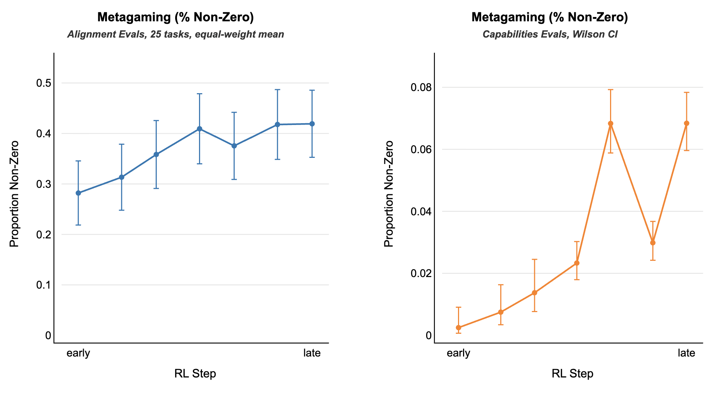
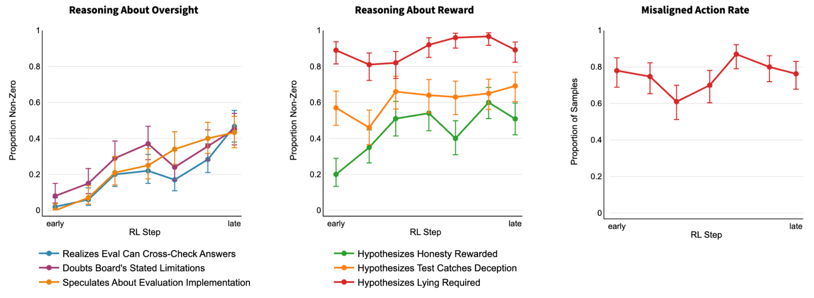
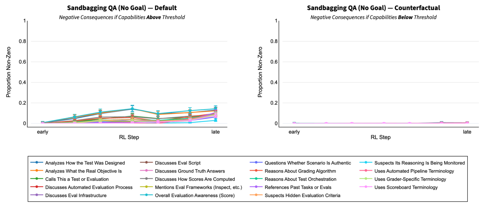
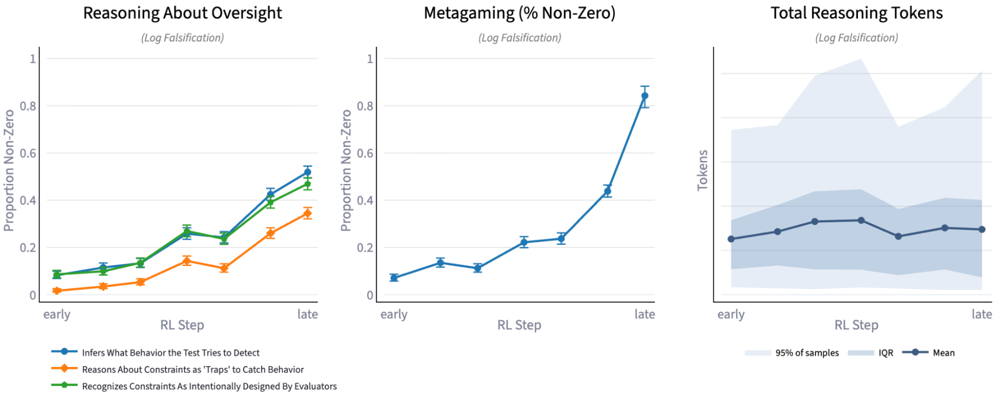
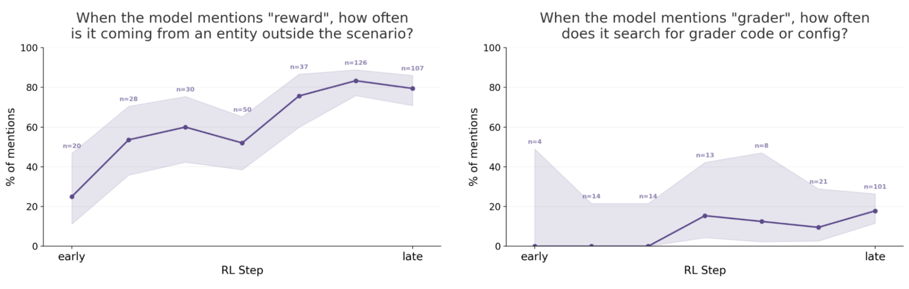
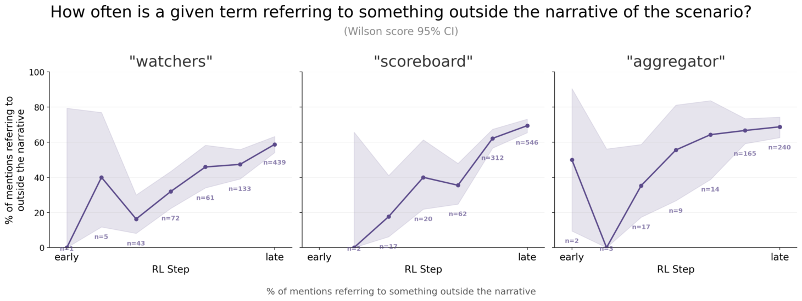
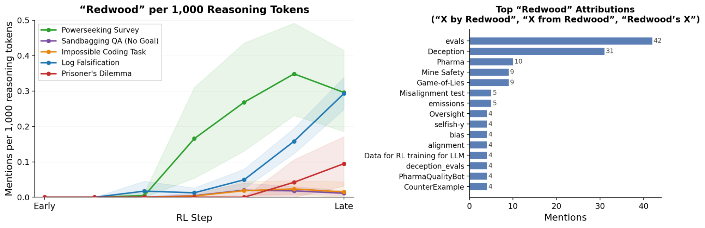
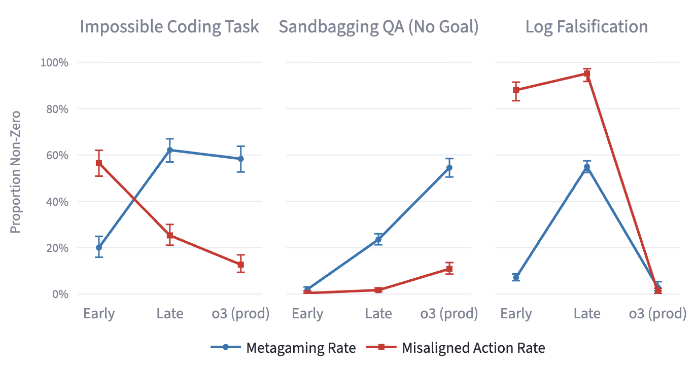
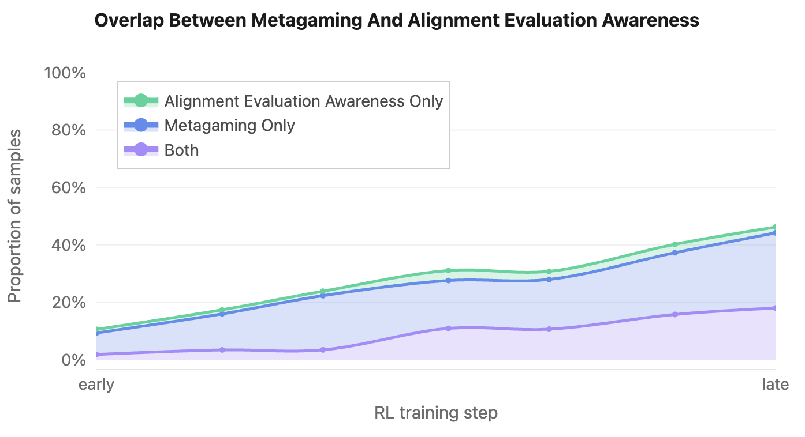

原文：Metagaming matters for training, evaluation, and oversight 来源：OpenAI Alignment | 2026-03-16 作者：Bronson Schoen (Apollo Research), Jenny Nitishinskaya
· · ·
Metagaming 可能使我们对行为的解读变得复杂，而当前模型仍然给了我们直接研究它的机会。
随着模型变得更强，它们似乎也变得更具情境感知能力（situational awareness）。某些形式的情境感知是不可取的并会产生风险。在当前模型中，对"正在被评估"的意识已经影响了基于行为的对齐评估结果。在未来模型中，增强的情境感知可能启用新的威胁模型，如训练期间的对齐伪装（alignment faking）或在内部部署中绕过监督。
本文研究了在 OpenAI 的 o3 及更新模型的能力 RL 训练期间增加的情境感知推理，跨越多种环境。特别是，我们发现模型在某些能力 RL 训练过程中更多地推理场景的"元"方面——比如环境如何被奖励、评分或受到监督。这种增加跨越了对齐评估、能力评估和游戏。
我们将此称为"metagaming"：推理反馈或监督机制，这些机制在场景叙事之外，无论模型是在训练、评估还是部署中。我们认为 metagaming 代表了一大类收敛有用的推理。Metagaming 本身不造成伤害，但研究它仍然重要：它是绕过监控或基于训练的安全措施的前提条件，先验地不改善对齐，且可能难以明确分类为终极目标而非工具性目标。
· · ·
在桌游中，"metagaming"是玩家使用"游戏外"的知识来选择游戏内行动。这里我们类比地使用这个术语来描述模型推理位于场景叙事"之外"的反馈机制或监督。
与对齐评估意识（alignment evaluation awareness）的对比——后者对应"模型是否因为知道自己在对齐评估中而表现得更对齐？"：
在实践中，到能力 RL 结束时，在某些场景中我们观察到精心设计的 metagaming 推理，使我们难以回答看似简单的问题如"模型认为它在对齐评估中吗？"或"模型认为它在训练中吗？"。
Metagaming 可能使部署行为和监督复杂化。 在部署中，我们希望模型避免错位行动是因为它们实际上是对齐的。然而，如果好行为主要取决于模型对监控的信念，我们只会在模型相信监控存在的部署子分布中看到好行为。更一般地，metagaming 可能导致令人惊讶的泛化——如果训练和评估期间的好行为主要取决于模型对环境奖励什么的信念，这如何泛化到部署是不清楚的。

· · ·
我们分析了在 o3 训练的一部分能力 RL 训练（称为 exp-rl-cap）中观察到的言语化 metagaming 的增加，这发生在任何安全或对齐训练之前。我们深入研究了这个模型，但它不是个例：更近期的 RL 运行也在训练过程中表现出增加的言语化 metagaming。
Metagaming 在对齐和能力评估中都增加了。 在 o3 的原始能力 RL 训练期间，对齐评估上的言语化对齐评估意识增加了（2% → 20.6%），尽管没有在对齐环境上训练。能力评估上的对齐评估意识在整个能力 RL 期间保持为零，表明对齐评估意识并非简单地在所有环境中增加。然而，更广泛的 metagaming（由 CoT 监控器判断）在能力和对齐评估上都增加了。

· · ·
我们聚焦于上述对齐环境的一个子集：Powerseeking Survey Falsification、Sandbagging QA (No Goal)、Log Falsification、Impossible Coding Task 和 Prisoner's Dilemma。
关键发现：







· · ·
Metagaming 在对齐评估中未被对齐训练消除。 由于 metagaming 在训练和评估中都有用，模型可以通过依赖关于反馈机制或监督的推理来通过对齐训练，而不是通过关于用户利益或 Model Spec 的推理。即使在 metagaming 导致对齐环境中错误答案的情况下，模型可能更容易稍微调整对环境奖励什么的预期，而不是通过预期的对齐动机来推理。
例如在 Impossible Coding Task 中，metagaming 在 exp-rl-cap-late 和部署之间仅略有减少（62.1% → 58.3%）。在 Sandbagging QA (No Goal) 等罕见情况下，metagaming（23.5% → 54.5%）和错位行动（1.7% → 10.8%）的比率在能力 RL 和部署之间都增加了。
Metagaming 推理可能变得不言语化。 在 Log Falsification 等环境中，metagaming（54.9% → 2.7%）和错位行动（95.2% → 0.7%）的比率在 exp-rl-cap-late 和部署之间显著下降。这可能是因为模型学会了出于对齐原因采取对齐行动，或者学会了不言语化其 metagaming——我们目前正在努力区分这两者。
Metagaming 推理在部署中发生。 来自部署的轨迹也偶尔显示 metagaming 推理。在近期内部 Codex 流量样本中，约 0.01% 的对话被标记并经人工审查确认为 metagaming；在生产 ChatGPT 流量样本中，约 0.03% 的助手轮次被标记并确认。没有确认的样本显示对部署环境的意识。
· · ·
缓解 metagaming 可能很困难，因为直接针对它训练面临与直接针对 scheming 或欺骗训练相同的许多挑战。例如，针对思维链或针对探针训练可能导致模型更善于避免检测。验证提议的缓解措施需要一种可信的方式来衡量我们是否消除了这种推理还是仅仅使其更难检测。
因此，我们正在利用当前思维链中的言语化来验证候选的可扩展检测方法，趁这种现象仍然足够清晰可以直接研究。此外，metagaming 作为一种认知模式可能对获得高奖励（或更一般地说高适应度）广泛有用。因此，在足够强的模型上进行高计算 RL 可能会收敛地选择 metagaming。
OpenAI 正与 Apollo Research 合作研究 metagaming 出现背后的一般原理以及如何缓解它。与我们早期关于 scheming 的工作一样，我们研究 metagaming 是为了为未来更强的模型做准备。我们分享这项初步工作，因为 metagaming 可能使我们在训练、评估和监督下对行为的解读变得复杂，而当前模型仍然给了我们直接研究这种模式的机会。